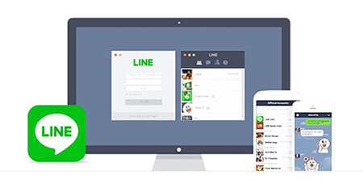
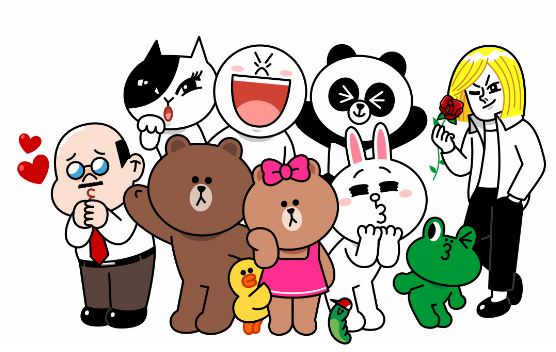

LINE
introduction
LINE
LINE은 2011년 6월 첫 출시 후 3년 만에 전 세계 사용자 5억 명이 함께 쓰는 명실상부한 글로벌 서비스로 성장했습니다. 현재 LINE은 17개 언어로 서비스되고 있으며, LINE의 서비스를 제공받는 국가의 수는 230개에 이릅니다. 일반적인 모바일 메신저를 넘어 전 세계 모든 사용자들이 일상생활 곳곳에서 친근하고 편리하게 사용할 수 있는 모바일 플랫폼을 제공하기 위해, 오늘도 LINE의 직원들은 세계 곳곳을 누비며 가슴 뛰는 도전을 펼치고 있습니다.
Mission
CLOSING THE DISTANCE
LINE의 미션은 사람과 사람, 정보,서비스 사이의 거리를 좁히는 것입니다.
모바일 메신저로 탄생한 LINE은 앞으로 모바일에서 이용자들이 원하는 모든 것을 종합적으로 해결하는 스마트 포털로 진화하겠습니다.
사람과 정보/콘텐츠, 온/오프라인 서비스 등 모든 것들과 이용자가 언제 어디서나 가장 적절한 거리에서 원활하게 연결되어 LINE을 입구 삼아 모든 생활이 완결되는 세상을 만들기 위해 노력하겠습니다.
LINE은 여러분과 세상을 이어주고 매일 함께 시간을 보내는 가족, 친구 같은 존재가 되고자 합니다.
LINE STYLE
LINE은 끊임없이 도전하는 회사입니다.
우리는 치열한 경쟁 속에서 생존하기 위해 USER와 시장의 변화에 맞춰 계속 진화를 해 왔으며 이러한 과정에서 실패를 두려워하지 않고 혁신적인 방법을 모색하여 도전 함으로써 새로운 가치를 만들어 내고 있습니다. 현실에 안주하지 않고 계속 진화하여 혁신적인 가치를 제공하기 위해 우리가 추구해온 가치 기준을 한 마디로 표현한 것이 바로 “WOW"일 것입니다.
LINE CODE

우리가 만들어 가고자 하는 “WOW”는 혁신만을 추구해서는 실현되지 않습니다. 우리가 지속적으로 도전하며 끝없이 새로운 가치를 개발하고 창조해 나가기 위해서는, 사회의 룰을 지키고 주위 사람들을 존중하면서 겸손한 자세로 투명성을 유지하며 행동해야 합니다..
©LINE Corporation 2016648094 정현정
LINE

Global Messenger, LINE
전 세계에서 가장 빠르게 성장하는 모바일 메신저, LINE
LINE은 전 세계에서 가장 빠르게 성장하는 글로벌 모바일 메신저로서 언제, 어디서나 간편하게 친구들과 무료로 메시지 및 영상/음성 통화를 즐길 수 있습니다. 아이폰, 안드로이드폰, 윈도우폰, 블랙베리, 노키아폰, 파이어폭스OS의 스마트폰을 비롯해 PC와 MAC에서도 LINE을 만나보세요.
자세히보기
LINE Stickers & Creators Market
LINE 스티커로 대화를 더욱 즐겁게! Creators Market에 내가 만든 스티커를 소개해보세요.
다양한 캐릭터와 함께 움직이는 스티커로 친구들과 이야기해보세요. LINE의 스티커샵과 LINE Store에서 수만 개의 스티커들을 만날 수 있습니다. 또 LINE의 유저라면 프로와 아마추어, 나이와 직업에 상관없이 누구나 LINE Creators Market에 참여할 수 있습니다. 내가 만든 스티커를 전 세계 여러 나라의 LINE 친구들에게 소개해보세요.
LINE Store 가기
LINE Games
친구와 함께라서 더욱 재미있는 LINE 게임
LINE의 캐릭터들이 다양한 게임 속으로 들어와 흥미진진한 게임의 세계를 펼칩니다. LINE 친구들이 뭉칠수록 게임은 점점 더 흥미진진해집니다. 전 세계에서 인기 있는 캐릭터와 LINE 친구들이 함께하는 더 많은 게임이 여러분을 찾아갈 예정입니다.
자세히보기
LINE Family Apps
LINE과 함께 당신의 모바일 라이프를 더욱 쉽고 스마트하게
LINE DECO로 내 취향에 맞게 폰을 꾸미고 LINE Camera로 멋진 사진을 찍어보세요. 웹툰, 백신 같은 실생활에 유용한 앱들이 모인 LINE Family Apps는 당신의 모바일 라이프를 더욱 쉽고 스마트하게 만듭니다.
자세히보기
©LINE Corporation 2016648094 정현정
LINE
LINE FRIENDS

라인프렌즈는 2011년, 모바일 메신저 ‘라인’의 스티커 캐릭터로 탄생했습니다. 친근하고 공감가는 모습으로 사용자들에게 즐거움을 주는 11명의 친구들은 각기 다른 매력으로 모든 세대를 사로잡았습니다. 최고의 퀄리티를 자랑하는 캐릭터 상품을 비롯해 애니메이션, 게임, 카페, 호텔, 테마파크에 이르기까지. 전세계를 무대로 다양한 영역에서 활약을 펼치고 있답니다. 앞으로 라인프렌즈가 만들어나갈 더 즐겁고 신나는 세상을 기대해 주세요!
{kind=link}
{kind=link}
{kind=link}
{kind=link}
{kind=link}
{kind=link}
{kind=link}
{kind=link}
LINE
Engineer
글로벌 메신저 LINE, LINE 게임, 그리고 다양한 패밀리 애플리케이션들을 개발합니다.Development - LINE(Server / Client)
글로벌메신저 LINE의 대용량 서버 개발을 담당하고 데이터 분석을 진행하며, 아이폰/안드로이드/Mac등 다양한 OS에서 동작하는 클라이언트 플랫폼 및 기능 개발을 진행합니다.
Development – Game
(Server / Client)
전 세계에서 사랑 받고 있는 LINE 오리지널 게임을 개발하고, 오리지널 게임 및 퍼블리싱 게임이 잘 운영될 수 있도록 플랫폼을 개발합니다.
Development – Family Apps
(Server / Client)
LINE과 연동되어 전 세계 사용자들에게 즐거움을 주는 각종 패밀리 애플리케이션을 개발합니다.
Designer
LINE과 관련한 서비스별 UI 디자인과 캐릭터 디자인, 브랜드 및 제품 디자인을 수행합니다.UI Design
글로벌 메신저인 LINE 및 LINE Game, 그리고 각종 패밀리 애플리케이션 전반에 걸쳐 감각 있게 디자인합니다.
Character Design
LINE의 사랑스러운 오리지널 캐릭터를 만들어내고, 여러 서비스에 활용할 수 있도록 일러스트레이션합니다.
Brand Design
국내외 온라인/오프라인 프로모션을 위한 브랜드 디자인을 수행하고 공간, 영상, 사운드도 만듭니다.
Product Design
LINE의 오리지널 캐릭터를 활용해 ‘LINE FRIENDS’의 다양한 제품들을 개발합니다.
Product Management
LINE 및 LINE 게임, 패밀리 애플리케이션 등의 서비스를 기획하고 운영합니다.Service Planning & Operation
글로벌 메신저 LINE과 각종 패밀리 애플리케이션을 다양한 디바이스와 환경에서 사용하는 유저의 입장에서 기획하고 설계하며, 운영합니다.
Game Planning
LINE의 오리지널 게임을 기획하고, 사업 전략의 수립과 실행을 전담하며, 서비스를 운영합니다.
Marketing / Business Development
글로벌 사업 개발, 마케팅, PR, 게임 사업 등의 직무에서 국내외 다양한 파트너와의 협업을 통해 LINE을 성장시켜 나갑니다.Biz Dev
한국 및 글로벌 국가를 대상으로 한 해당 지역 내 사업 개발 및 제휴/마케팅, 신규 시장 개척 등과 같은 업무를 수행합니다.
Marketing
전 세계의 더 많은 사용자가 LINE을 이용할 수 있도록 글로벌 마케팅 전략을 세우고 실행합니다.
PR
세계 각국의 온/오프라인 미디어를 대상으로 미디어 컨퍼런스 개최나 보도자료 배포 등을 진행합니다.
Game Business
LINE의 게임 플랫폼을 활용해 출시되는 전 세계의 다양한 게임들을 소싱하고 운영을 지원합니다.
Staff
인사, 재무, 구매, 법무 등을 지원하는 부서는 현업 부서와의 긴밀한 협업을 통해 LINE의 비즈니스를 선제적으로 지원합니다.HR
글로벌 인사의 방향 수립과 실행, 국내 및 해외의 인재 채용과 관리, 국내외 거점 설립 및 업무 환경 세팅 등의 업무를 담당합니다.
Finance / Procurement
한국 및 글로벌 거점의 예산 관리, 매출/비용 관리, 월차/기말 결산 체크, 자산 관리 및 운용, 각종 구매와 관련한 업무를 담당합니다.
Legal
회사 및 각종 서비스 관련 국내외의 다양한 법무 이슈들을 해결합니다.